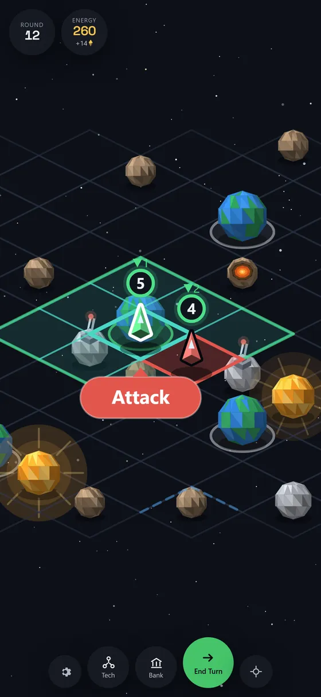
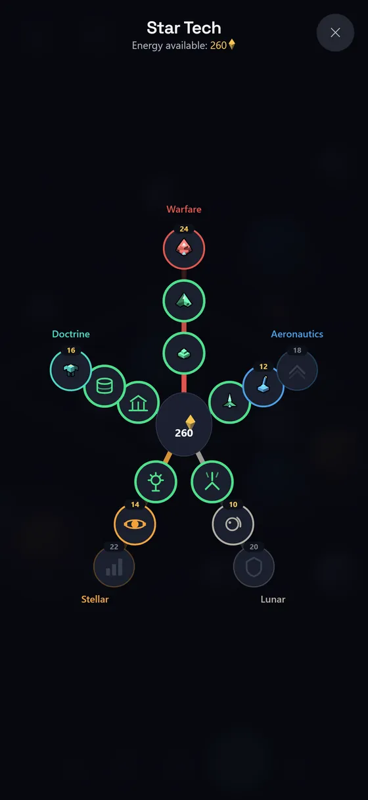
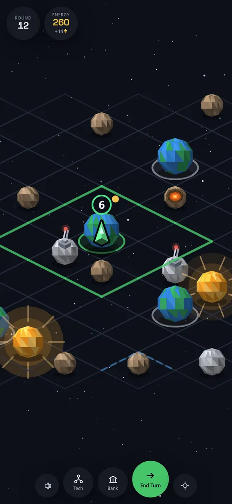
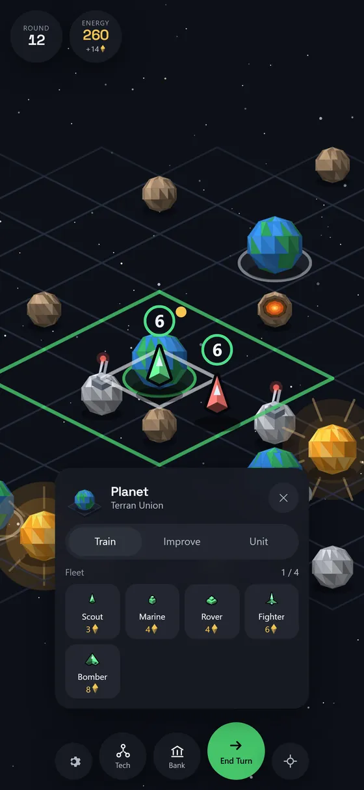
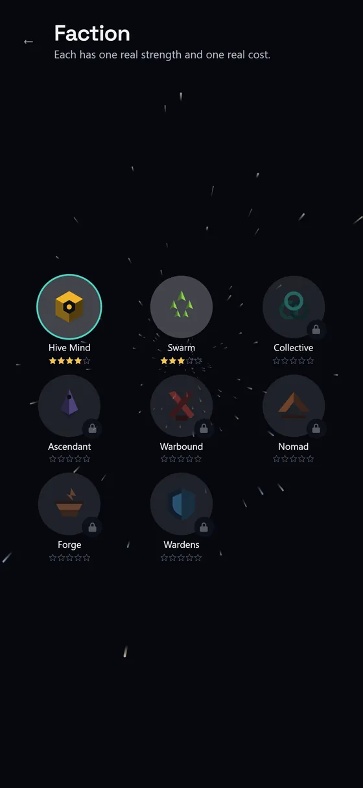
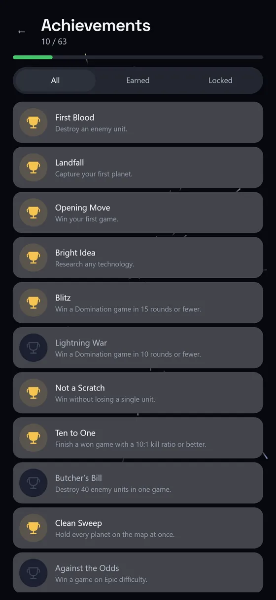

Celestile
Claim the cluster. Expand, build, and out‑think rival empires turn by turn.
Neither listing is live yet. These buttons will link out on release day.



A whole 4X on a phone
Celestile is a turn-based 4X strategy game for phones and tablets. You claim a cluster of space one tile at a time — expanding across space, asteroids, moons, planets and suns, building inside the territory you hold, researching, and out-thinking up to fourteen rival empires. The board scales with the field: a tight 12×12 grid against a single opponent, up to 24×24 against fourteen, across four difficulty levels.
Domination
Hold every planet on the map.
Ascendancy
Finish ahead of every rival inside 40 rounds.
No dice
The forecast above a fight is the outcome. Attack, defence, terrain and technology resolve to one number, and you see that number before you commit. A fight you lose is a fight you misread — not one a random roll took from you. It is the whole reason the game exists.
- Strength 6 5 Your Marine Forecast
- Strength 7 4 Their Rover Forecast
Nothing has happened yet. Those two numbers are what will happen.
Example strengths. The rule they demonstrate is not an example.
Five rules worth knowing
Territory you have to earn
Every planet projects a zone of control, and you can only build inside your own. Put three Moon Lasers in a planet’s zone and that zone widens. Growth is a build order, not a land grab.
A tech web that fits on one screen
Five disciplines — Warfare, Doctrine, Aeronautics, Stellar and Lunar — three tiers each. Fifteen technologies on a radial web you read at a glance instead of scrolling.
Fog that hides fleets, not geography
You see your own zones plus a tile, and a tile around every unit. Ground you have already explored stays on the map, dimmed. An enemy fleet standing on it does not.
An economy you can leverage
Deposit energy in the bank and draw interest, or borrow against the future and settle a balloon payment five rounds later. Miss it and the Galactic Bank sends dreadnoughts to collect.
Eight unit classes, and a reason to specialise
Scout, Marine, Rover, Fighter, Bomber, Mech, Artillery, Dreadnought. Build a military university for a class and every unit of that class attacks 10% harder for the rest of the game, anywhere on the map.
Eight factions
Each has one real strength and one real cost. Nothing here is a straight upgrade, so choosing is an actual decision rather than picking a skin. Two ship with the game; the other six are a one-time $1.99 each, with no subscription.
Six screens from one match




What you get
In the box
- Two factions free — Hive Mind and Swarm, plus the whole game around them.
- Every map size, every unit, every technology, both win conditions.
- 63 achievements, a five-star rating for every faction, and a career record that persists between games.
- Nine languages: English, Spanish, Russian, German, French, Portuguese, Hindi, Korean, Japanese.
- Six further factions at a one-time $1.99 each. No subscription.
Not in the box
- No account and no login.
- No internet connection — it plays entirely offline.
- No chat, and no other players.
- No energy timers and nothing time-gated.
- No dice, anywhere in combat.
About the one ad. There is a single interstitial, and only from your third match of the day — your first two each day are never interrupted.
Buy any faction and it never appears again. Players in the EEA, the UK and Switzerland never see it at all.
Get Celestile
Celestile ships to the App Store and Google Play. Neither listing is live yet — the buttons at the top of this page will link out on release day.